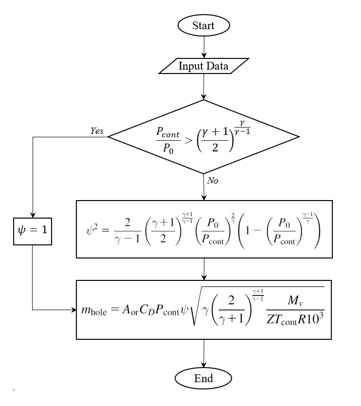

GasUnitHole Command
- OutFlowModel.GasUnitHole(tag, Hole_Diameter=0.01, Total_t=20, Cd=1, Gas_Constant=8.31446261815324)
This command models gas outflow from a hole using the following flowchart from [Ref.1].
 GasUnitHole command flowchart
Argument
Type
Description
Tag
int
Unique integer value that will be used for referring to the defined elements or objects.
Hole_Diameter
float
Diameter of the hole that gas is releasing from.
Total_t
float
Total duration of outflow
Cd
float
Explained in [Ref.1].
Gas_Constant
float
Gas Constant
Example:
Python Code
import opensrane as opr opr.OutFlowModel.GasUnitHole(2, Hole_Diameter=0.02, Total_t=40, Cd=0.62, Gas_Constant=8.31446261815324,)
Code Developed by: Bijan Sayyafzadeh